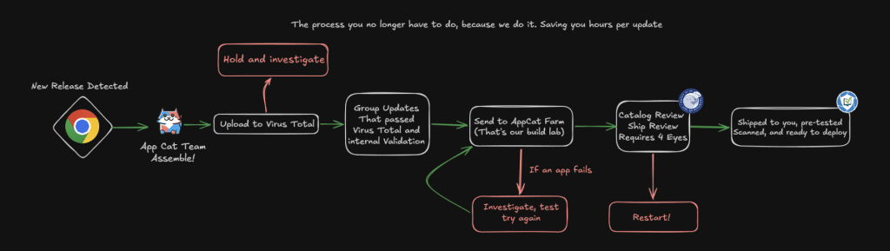

Four days ago, on June 22, 2026, the Five Eyes intelligence alliance released a joint statement. The message, echoed through the government channels of its member countries, was simple: Get rid of unsupported systems, tighten firewall rules, implement tiered administrative access, test your BCP/DR plans, and patch your freaking computers.
It reads as follows:
- Reduce your attack surface: Limit unnecessary system access and external connectivity. Challenge whether systems need to be exposed at all and isolate those that do not.
- Accelerate patching processes: AI is shortening the time between vulnerability discovery and exploitation. Delays in patching increase risk, especially for operational systems with long update cycles. Prioritize security updates according to manage risks.
- Address legacy systems: Unsupported systems are easy targets. They are not just technical debt, they are strategic liabilities.
- Review and strengthen identity and access controls: Limit who can access critical systems. Enforce strong authentication and regularly review permissions.
- Prepare for incidents before they happen: Test response plans, train and prepare teams, and assume breaches will occur. Focus on fast containment and recovery.
You might be thinking, “Thank you, Captain Obvious. This seems like table stakes.” And that’s fair. But their motivation for delivering this message more firmly than ever before is the mounting pressure created by how fast Frontier Model AI tools are improving.
Who is Five Eyes, and why should I care?
Five Eyes is an intelligence-sharing alliance between the United States, the United Kingdom, Canada, Australia, and New Zealand. The group, which traces its origins to secret meetings of World War II-era code breakers from the U.S. and the U.K., occasionally shares joint statements on topics like terrorism, online safety, telecommunications, and cybersecurity. Each of the five nations has at least one agency dedicated to Cyber Defense. The USA, for example, has CISA and the NSA, Canada has the CCCS, Australia has the ASD, the UK has the NCSC, and New Zealand has the NCSC-NZ. All of these groups have a unique set of priorities and opinions and conduct independent cybersecurity research to inform their respective nations’ cybersecurity posture.
What exactly do they want me to do?
The joint statement is blunt. It gives equal weight to each of its five recommendations (And, sure, the statement might have been written by AI, but that doesn’t minimize its truth).
I want to focus on the second point. After almost two decades of working with companies to help accelerate patching, it causes me physical pain to see “Accelerate patching processes” included on the action list.
I feel that, of the items on the list, this one is the most likely to be rapidly abused by bad actors and impacted by the availability of AI. Historically, busy admins might have… skipped certain patches. Well, no more! I looked back at stats from January 20th to April 6th for Google Chrome.
Google Chrome released ~117 security fixes in the three months before Mythos was released.
Post Mythos release, from April 7th to June 23 ~ 1,074 security fixes were made, 429 of those were in a single build on June 2nd.

This means, if your patch management process requires a week of testing on average, you’re living with 97 vulnerabilities. For every week that goes by after, every machine that fails to patch has another 97 vulnerabilities for a single application. This. Ends. Poorly.
The Good News, Patch My PC Can Help
Patch My PC exists to solve the patching-speed problem for third-party applications. The average time to prepare, test, and build an application manually is 2-4 hours per application. Most IT Departments are chronically understaffed, overworked and constantly having to fight fires. Patch My PC automates the discovery, packaging, and deployment of third-party updates across your environment so that when a vendor drops a critical fix, you aren’t spending time learning about it, testing it, and figuring out new command line switches.


You’re just deploying it and reporting on it.
Deploying is the first half of the story, though; you have to be able to report on the success of the patches. What were the success or failure rates? What version is currently there? As my auditors like to say, “If it’s not documented, it didn’t happen.” If you want to know more about how we think we can help, schedule a demo here: Schedule a Live Demo with an Engineer Patch My PC.
Oh, and I’ll admit I’m opinionated about how we can help, but if we aren’t the right choice for you, that’s OK.
The important takeaway is that doing nothing, hoping applications will update automatically, or assuming your users will update when prompted is a nonviable strategy.